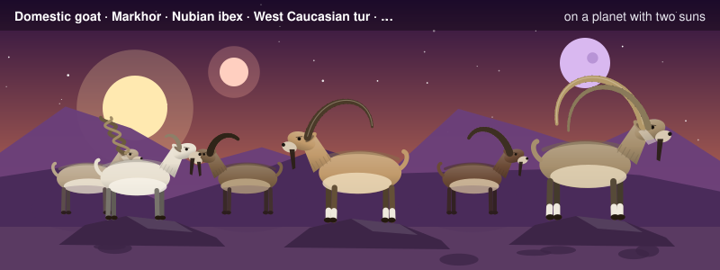
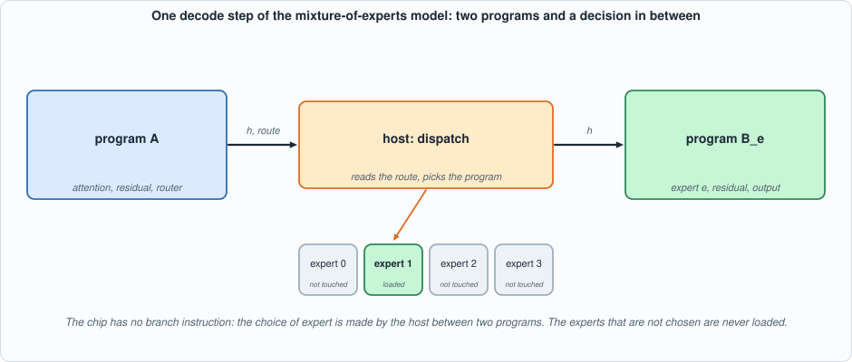
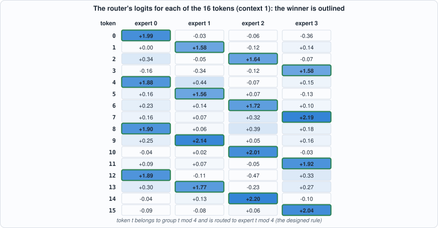
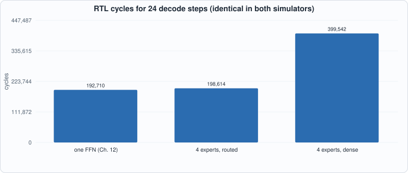
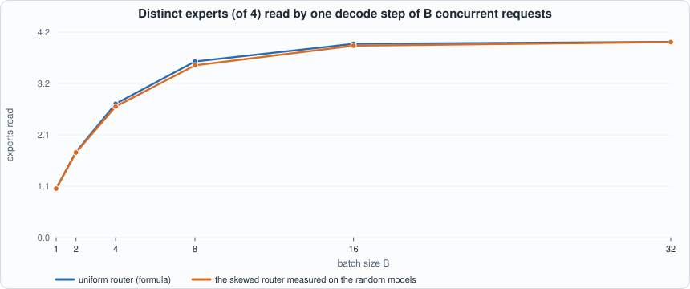
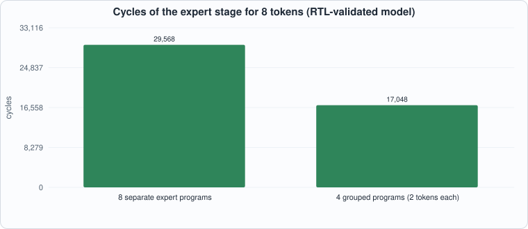
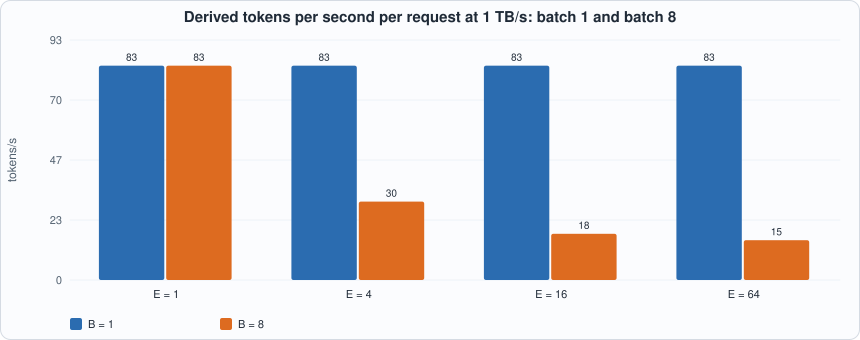

17. Mixture-of-Experts Routing¶

About the animals in this picture and where they are standing
- Domestic goat (Capra hircus) descends from the bezoar ibex and is among the oldest domesticated animals. There are on the order of a billion of them, kept for milk, meat, fibre and as pack animals.
- Markhor (Capra falconeri) lives in the mountains of Pakistan, Afghanistan and neighbouring regions. The males' horns twist in a corkscrew; the name is often explained as Persian for 'snake-eater'. It is Pakistan's national animal, and community-based conservation has helped some populations recover.
- Nubian ibex (Capra nubiana) lives in the rocky, arid hills of north-east Africa and the Arabian Peninsula, from the Sinai and Egypt south to Sudan and Ethiopia. Its coat matches the desert rock, and the males' ridged horns sweep back like a sickle.
- West Caucasian tur (Capra caucasica) lives only in the western Caucasus, on steep slopes above the forest line. Its horns are short and heavy, curving outward and back, and it moves up and down cliffs with ease.
- Siberian ibex (Capra sibirica) lives in the high mountains of Central Asia, from the Altai and Tian Shan to the Himalaya. It is one of the largest ibexes, and the males' ridged horns can exceed a metre in length.
- Walia ibex (Capra walie) lives nowhere but the Simien Mountains of northern Ethiopia, on high cliffs. It is endangered, with only a few hundred animals remaining, and is protected within the Simien Mountains National Park.
The scene is imaginary: it is set on an imaginary planet with two suns and a purple moon. The animals are stylised drawings, shown where they could not live, for effect.
What you will see: a model that stores four times the feed-forward knowledge and, per token, uses a quarter of it. The feed-forward block of the tiny model of Chapter 12 is replaced by four experts and a router; each token is sent to one expert (top-1 routing). Because the chip has no branch instruction, a decode step becomes two programs with the host's decision in between: program A (attention and the router) hands over h and the chosen expert; the host picks that expert's program B; B loads only that expert's weights. On the RTL, in both simulators, four experts cost 3% more cycles than the single feed-forward block of Chapter 12 (198,614 against 192,710 for 24 steps), while evaluating every expert costs 2.07 times as much (399,542). The model is built so that only the right expert knows the answer, which makes a wrong dispatch visible as a wrong token.
What you need to know first: Chapter 11 (the compiler), Chapter 12 (the tiny model and its host loop), Chapter 9 (weight traffic). Chapter 15 (the host doing work around the chip) helps.
What this chapter builds: model/moe_lm.py (model, graphs, host loop, the dense comparison), model/moe_tests.py, tools/ch17_run.py, tools/mut_ch17.py, and the running examples tools/ch17_example_a.py and tools/ch17_example_b.py. No hardware or compiler change: routing is the host's job and everything else is operations the compiler already had.
Why experts¶
A dense model's capacity grows with its parameters, and so does the cost of every token: each one reads every weight. A mixture of experts (MoE) breaks that link. The feed-forward block, which holds most of a transformer's parameters, is split into E experts, and a small router looks at each token's hidden state and picks which expert (or, in most models, the best two) should process it. The model has E times the feed-forward parameters, but a token reads and multiplies only its chosen expert's. Production models of this family (Switch Transformer, Mixtral, DeepSeek-MoE and others) use 8 to 256 experts.
h = x + attention(x) # as before
r = h Wr # one score per expert (the router)
e = argmax(r) # top-1
y = h + expert_e(h) = h + relu(h W1_e) W2_e
logits = y Wout
Simplifications, stated. Top-1 routing without a gate weight. Real MoE layers multiply the expert's output by the router's softmax probability for it, which is what lets training send gradient to the router. Capra has no element-wise multiply, and nothing here is trained, so the gate is left out; the routing decision is the same. The router, experts and attention are not trained: the structured model's weights are constructed, as in Chapter 12.

Figure 17.1: a step of the MoE model. The host reads the route that program A wrote out, and runs the program of that expert only.The model, and why the dispatch matters¶
#!/usr/bin/env python3
"""Chapter 17: a mixture-of-experts feed-forward block on the tiny language model.
THE MODEL. Chapter 12's decode step with its feed-forward block replaced by E = 4 EXPERTS (each a feed-forward block of hidden width 32, like the original) and a ROUTER: r = h Wr (one number per expert), e = argmax r, y = h + expert_e(h). Top-1 routing, no gate weight (Capra has no element-wise multiply; the router is not trained here, so no gradient needs the gate).
WHY IT IS DONE. A model with E experts has E times the feed-forward parameters, but each token uses one expert: compute per token and, at batch 1, WEIGHT TRAFFIC per token stay those of one expert.
THE CHIP HAS NO BRANCHES, so a decode step is TWO programs and the host in between: program A (attention, residual, router) outputs h and the chosen expert; the host picks the program B_e for that expert; B_e (the expert's two matmuls, the residual and the output projection) outputs the logits. B_e loads only expert e's weights. Dispatch is the host's job (as paging was in Chapter 15), and a wrong dispatch is a wrong answer: the structured model below is built so that only the right expert knows the rule.
"""
import math, os, random, sys
sys.path.insert(0, os.path.dirname(os.path.abspath(__file__)))
os.environ.setdefault("GA2_EXT", "8192")
import capra as C, tiny_lm as T, ga2_isa as I
V = D = 16; HID = 32; E = 4
def group(t): return t % E
def make_moe(kind="structured", seed=1, noise=0.45):
"""Structured: token t belongs to group t % 4; the router sends h ~ embedding[t] to expert t % 4; expert e knows the rule f(t) = 5t+3 mod 16 for its four tokens and outputs (embedding[f(t)] - embedding[t]), so that y = h + expert(h) ~ embedding[f(t)]; the output matrix reads embedding[j] for logit j. Only the right expert knows the answer. Random: all weights random."""
R = random.Random(seed); g = lambda r, c, sd: [[R.gauss(0, sd) for _ in range(c)] for _ in range(r)]
if kind == "structured":
Em = [[x / 4 for x in row] for row in T.hadamard(16)]; s = noise; cc = 4.0
Wout = [[8.0 * Em[j][d] for j in range(V)] for d in range(D)]
Wr = [[2.0 * sum(Em[t][d] for t in range(V) if group(t) == e) for e in range(E)] for d in range(D)]
experts = []
for e in range(E):
W1 = g(D, HID, 0.02); W2 = g(HID, D, 0.02); members = [t for t in range(V) if group(t) == e]
for j, t in enumerate(members):
for d in range(D): W1[d][j] = cc * Em[t][d]; W2[j][d] = (Em[T.f_next(t)][d] - Em[t][d]) / cc
experts.append((W1, W2))
else:
Em = [[x / 4 for x in r] for r in g(V, D, 1.0)]; s = 1.0; Wout = g(D, V, 1 / math.sqrt(D)); Wr = g(D, E, 1.0)
experts = [(g(D, HID, 1 / math.sqrt(D)), g(HID, D, 1 / math.sqrt(HID))) for _ in range(E)]
return {"kind": kind, "E": Em, "Wq": g(D, D, s / math.sqrt(D)), "Wk": g(D, D, s / math.sqrt(D)), "Wv": g(D, D, s / math.sqrt(D)), "Wo": g(D, D, s / math.sqrt(D)), "Wr": Wr, "experts": experts, "Wout": Wout}
mv = T.mv
def float_step(m, tok, kc, vc, route=None):
"""One decode step. route: force the expert (to measure what a wrong route costs); default is the router's argmax. Returns logits, route, k, v, h, router logits."""
x = m["E"][tok]; q, k, v = mv(x, m["Wq"]), mv(x, m["Wk"]), mv(x, m["Wv"]); K = kc + [k]; Vv = vc + [v]
sc = [sum(q[i] * Kr[i] for i in range(D)) / math.sqrt(D) for Kr in K]; mx = max(sc); e_ = [math.exp(s - mx) for s in sc]; z = sum(e_)
a = [sum(e_[p] / z * Vv[p][i] for p in range(len(K))) for i in range(D)]; h = [xi + oi for xi, oi in zip(x, mv(a, m["Wo"]))]
r = mv(h, m["Wr"]); e = r.index(max(r)) if route is None else route; W1, W2 = m["experts"][e]; y = [hi + fi for hi, fi in zip(h, mv([max(0.0, t) for t in mv(h, W1)], W2))]
return mv(y, m["Wout"]), e, k, v, h, r
def float_generate(m, start, n, flip=None):
toks = [start]; kc, vc = [], []
for _ in range(n):
lg, e, k, v, h, r = float_step(m, toks[-1], kc, vc); kc.append(k); vc.append(v); toks.append(lg.index(max(lg)))
return toks
# ---------------------------------------------------------------- the programs
def build_A(m, L):
g = C.Graph(); x = g.tag(g.input("x", (1, D)), "x"); w = lambda nm, a: g.weight(nm, a)
q = g.matmul(x, w("Wq", m["Wq"])); k = g.tag(g.matmul(x, w("Wk", m["Wk"])), "k"); v = g.tag(g.matmul(x, w("Wv", m["Wv"])), "v")
if L > 1: K = g.tag(g.concat_rows(g.tag(g.input("kc", (L - 1, D)), "k"), k), "k"); Vv = g.tag(g.concat_rows(g.tag(g.input("vc", (L - 1, D)), "v"), v), "v")
else: K, Vv = k, v
p = g.softmax(g.matmul(q, K, transpose_b=True, scale=1 / math.sqrt(D))); a = g.matmul(p, Vv); h = g.tag(g.add(x, g.matmul(a, w("Wo", m["Wo"]))), "h")
r = g.matmul(h, w("Wr", m["Wr"])); g.output(h, "h"); g.output(g.argmax(r), "route"); g.output(r, "router"); g.output(k, "k_new"); g.output(v, "v_new"); return g
def build_B(m, e, rows=1):
g = C.Graph(); h = g.tag(g.input("h", (rows, D)), "h"); W1, W2 = m["experts"][e]
y = g.add(h, g.matmul(g.relu(g.matmul(h, g.weight("W1", W1))), g.weight("W2", W2))); lg = g.matmul(y, g.weight("Wout", m["Wout"]))
g.output(g.argmax(lg), "tok"); g.output(lg, "logits"); return g
def build_dense_all(m, L):
"""The same function with NO routing: every expert is evaluated and the outputs are added (non-routed experts output ~0 on this model). It shows what the MoE saves."""
g = C.Graph(); x = g.tag(g.input("x", (1, D)), "x"); w = lambda nm, a: g.weight(nm, a)
q = g.matmul(x, w("Wq", m["Wq"])); k = g.tag(g.matmul(x, w("Wk", m["Wk"])), "k"); v = g.tag(g.matmul(x, w("Wv", m["Wv"])), "v")
if L > 1: K = g.tag(g.concat_rows(g.tag(g.input("kc", (L - 1, D)), "k"), k), "k"); Vv = g.tag(g.concat_rows(g.tag(g.input("vc", (L - 1, D)), "v"), v), "v")
else: K, Vv = k, v
p = g.softmax(g.matmul(q, K, transpose_b=True, scale=1 / math.sqrt(D))); a = g.matmul(p, Vv); h = g.tag(g.add(x, g.matmul(a, w("Wo", m["Wo"]))), "h"); y = h
for e in range(E): y = g.add(y, g.matmul(g.relu(g.matmul(h, w(f"W1_{e}", m["experts"][e][0]))), w(f"W2_{e}", m["experts"][e][1])))
g.output(g.argmax(g.matmul(y, w("Wout", m["Wout"]))), "tok"); g.output(k, "k_new"); g.output(v, "v_new"); return g
class MoEChip:
"""Compiles A for each context length and B for each expert; calibrates from float runs; dispatches on the router's choice. dispatch(route) -> expert lets tests break the dispatch."""
def __init__(self, m, steps, starts=range(V)):
self.m = m; self.steps = steps; self.A = {}; self.B = {}; self.ca = {}; self.cb = {e: [] for e in range(E)}; rk = rv = rx = rh = 0.0
for s in starts:
toks = [s]; kc, vc = [], []
for L in range(1, steps + 1):
lg, e, k, v, h, r = float_step(m, toks[-1], kc, vc); self.ca.setdefault(L, []).append({"x": [m["E"][toks[-1]]], **({"kc": [list(r_) for r_ in kc], "vc": [list(r_) for r_ in vc]} if L > 1 else {})})
self.cb[e].append({"h": [list(h)]}); rk = max(rk, max(abs(t) for t in k)); rv = max(rv, max(abs(t) for t in v)); rx = max(rx, max(abs(t) for t in m["E"][toks[-1]])); rh = max(rh, max(abs(t) for t in h))
kc.append(k); vc.append(v); toks.append(lg.index(max(lg)))
self.ranges = {"x": rx, "k": rk, "v": rv, "h": rh}; allh = [s_ for e in range(E) for s_ in self.cb[e]]
for e in range(E):
if not self.cb[e]: self.cb[e] = allh[:8] # an expert the calibration runs never used: calibrate on whatever reached the layer
def progA(self, L):
if L not in self.A: self.A[L] = C.compile_graph(build_A(self.m, L), self.ca[L], ranges=self.ranges)
return self.A[L]
def progB(self, e):
if e not in self.B: self.B[e] = C.compile_graph(build_B(self.m, e), self.cb[e], ranges=self.ranges)
return self.B[e]
def dispatch(self, route): return route
def generate(self, start, n, force=None):
toks = [start]; kc, vc = [], []; rec = []
for L in range(1, n + 1):
PA = self.progA(L); inp = {"x": [self.m["E"][toks[-1]]]}
if L > 1: inp["kc"] = [list(r) for r in kc]; inp["vc"] = [list(r) for r in vc]
oa = C.run(PA, inp); route = oa["route"][0][0][0]; h = oa["h"][1]; e = self.dispatch(route); PB = self.progB(e); ob = C.run(PB, {"h": h})
rec.append({"L": L, "route": route, "expert": e, "h": h[0], "router": oa["router"][1][0], "logits": ob["logits"][1][0], "tok": ob["tok"][0][0][0], "progs": [{"kind": "A", "code": PA.code, "ext": C.ext_image(PA, inp)}, {"kind": "B", "code": PB.code, "ext": C.ext_image(PB, {"h": h})}]})
kc.append(oa["k_new"][1][0]); vc.append(oa["v_new"][1][0]); toks.append(force[L] if force else ob["tok"][0][0][0])
return toks, rec
def cycles_of(rec): return sum(I.cycle_counts(p["code"])[0] for r in rec for p in r["progs"])
if __name__ == "__main__":
m = make_moe("structured"); exp = [0]
for _ in range(24): exp.append(T.f_next(exp[-1]))
print("float rule ok:", float_generate(m, 0, 24) == exp); chip = MoEChip(m, 24); toks, rec = chip.generate(0, 24); print("chip rule ok:", toks == exp, "routes", [r["route"] for r in rec][:12], "cycles", cycles_of(rec))
class DenseChip:
"""The no-routing comparison: one program per step evaluates every expert."""
def __init__(self, moe):
self.m = moe.m; self.moe = moe; self.P = {}
def prog(self, L):
if L not in self.P: self.P[L] = C.compile_graph(build_dense_all(self.m, L), self.moe.ca[L], ranges=self.moe.ranges)
return self.P[L]
def generate(self, start, n):
toks = [start]; kc, vc = [], []; rec = []
for L in range(1, n + 1):
P = self.prog(L); inp = {"x": [self.m["E"][toks[-1]]]}
if L > 1: inp["kc"] = [list(r) for r in kc]; inp["vc"] = [list(r) for r in vc]
o = C.run(P, inp); rec.append({"L": L, "progs": [{"kind": "D", "code": P.code, "ext": C.ext_image(P, inp)}]}); kc.append(o["k_new"][1][0]); vc.append(o["v_new"][1][0]); toks.append(o["tok"][0][0][0])
return toks, rec
The structured model is built so that routing is not optional. The 16 embeddings are the orthogonal Hadamard rows of Chapter 12. Token t belongs to group t mod 4.
- The router has one column per expert: column
eis twice the sum of the embeddings of groupe's four tokens. Forh ~ embedding[t]the score is about 2 for the token's own group and about 0 for the others. - Expert
ehas four hidden units, one per token of its group: unitjfires whenhmatches that token and writesembedding[f(t)] - embedding[t]into the output (the rulef(t) = 5t + 3 mod 16of Chapter 12). The other 28 hidden units are small noise. - The output matrix reads the embeddings: logit
jis8 <y, embedding[j]>.
So with the right expert, y = embedding[t] + (embedding[f(t)] - embedding[t]) = embedding[f(t)] and the logit of f(t) wins. With a wrong expert none of its hidden units fires, y = h, and the model predicts the token it was just given. In Chapter 12 the feed-forward block only perturbed the logits; here it decides them, so a router or dispatch bug cannot hide.

Figure 17.2: the router's float logits for each token at context 1 (Running example A). Every token's winner is expertt mod 4; the margins are large (winners between 1.6 and 2.2, every other expert at most 0.44), which is why routing survives int8 on this model.
The programs¶
build_A(L)is Chapter 12's attention step through the residualh, then the router:r = h Wr. It outputsh(as int8 with its scale), the argmax ofr(the route, computed on the chip with theAMAXinstruction), the router logits (for the tests), and the new key and value.build_B(e)takeshas an input, runs experte's two matrices, the residual and the output matrix, and outputs the chosen token and the logits.build_dense_allis the comparison: every expert is evaluated and all outputs are added. On the structured model it computes the same function (the experts that do not know the token output about zero), at the cost of loading all four experts.
The hand-over. Program A's h is an int8 tensor with a scale; the host dequantizes it and gives it to B as the input h, which B quantizes with the scale the compiler planned for it. Both tensors carry the tag h, so the compiler gives them the same calibrated range, and the only extra rounding is the round trip. The cost of splitting the step is exactly this round trip plus B's own load of the output matrix.
Tests¶
#!/usr/bin/env python3
"""Chapter 17: the checks of the mixture-of-experts block. Returns a list of problems; empty means all pass.
(1) the STRUCTURED model: the router sends every token to its group's expert, the float model follows the rule, and forcing ANY other expert breaks the rule for every token (the experts are not interchangeable: routing matters);
(2) the chip's decode follows the rule through the two-program step; its route equals the float route at every step; compiled programs equal the integer interpreter;
(3) the chip's h, router logits and final logits are close to float;
(4) on a RANDOM model (teacher-forced): the chip's route equals the float route except where the float router's top two are nearly tied, and the logits stay close when the routes agree;
(5) the no-routing dense model (every expert evaluated) decodes the same tokens as the routed model on the structured model;
(6) the bookkeeping: the expert that ran is the expert the router chose."""
import math, os, sys
sys.path.insert(0, os.path.dirname(os.path.abspath(__file__)))
import capra as C, tiny_lm as T, moe_lm as M
def rel(a, b): return math.sqrt(sum((x - y) ** 2 for x, y in zip(a, b)) / (sum(y * y for y in b) or 1.0))
def check_all():
P = []; m = M.make_moe("structured"); exp = [0]
for _ in range(20): exp.append(T.f_next(exp[-1]))
for t in range(16): # (1)
lg, e, *_ = M.float_step(m, t, [], [])
if e != M.group(t): P.append(f"(1) token {t}: the router chose expert {e}, not {M.group(t)}")
if lg.index(max(lg)) != T.f_next(t): P.append(f"(1) token {t}: the routed float step does not follow the rule")
for bad in range(M.E):
if bad != M.group(t) and M.float_step(m, t, [], [], route=bad)[0].index(max(M.float_step(m, t, [], [], route=bad)[0])) == T.f_next(t): P.append(f"(1) token {t}: expert {bad} (the wrong one) also gives the right token")
if M.float_generate(m, 0, 20) != exp: P.append("(1) the float model does not follow the rule")
chip = M.MoEChip(m, 20); toks, rec = chip.generate(0, 20); kc, vc = [], []
if toks != exp: P.append("(2) the chip does not follow the rule")
for r, t_in in zip(rec, toks): # (2), (3), (6)
lg, e, k, v, h, rr = M.float_step(m, t_in, kc, vc); kc.append(k); vc.append(v)
if r["route"] != e: P.append(f"(2) step {r['L']}: chip route {r['route']}, float route {e}")
if r["progs"][1]["code"] is not chip.progB(r["route"]).code: P.append(f"(6) step {r['L']}: the program that ran is not the program of the expert the router chose")
if r["progs"][1]["ext"] != C.ext_image(chip.progB(r["route"]), {"h": [r["h"]]}): P.append(f"(6) step {r['L']}: the memory image given to program B does not hold the h that program A produced")
if r["expert"] != r["route"]: P.append(f"(6) step {r['L']}: expert {r['expert']} ran, the router chose {r['route']}")
if rel(r["logits"], lg) > 0.15: P.append(f"(3) step {r['L']}: chip logits differ from float by {rel(r['logits'], lg):.2f}")
if rel(r["router"], rr) > 0.15: P.append(f"(3) step {r['L']}: router logits differ from float by {rel(r['router'], rr):.2f}")
kc2 = []
for L in (1, 6, 14): # compiled == interpreted
PA = chip.progA(L); inp = {"x": [m["E"][toks[L - 1]]]}
if L > 1: kc3, vc3 = [], []; [ (lambda o: (kc3.append(o[2]), vc3.append(o[3])))(M.float_step(m, toks[i], kc3, vc3)) for i in range(L - 1)]; inp["kc"] = kc3; inp["vc"] = vc3
out = C.run(PA, inp); ref = C.interpret(PA, inp)
if any(out[nm][0] != ref[e["node"]] for nm, e in PA.ext.items() if e["kind"] == "output"): P.append(f"(2) program A (context {L}) differs from the interpreter")
for e in range(M.E):
PB = chip.progB(e); inp = {"h": [[0.5 * math.sin(i + e) for i in range(16)]]}; out = C.run(PB, inp); ref = C.interpret(PB, inp)
if any(out[nm][0] != ref[ex["node"]] for nm, ex in PB.ext.items() if ex["kind"] == "output"): P.append(f"(2) program B (expert {e}) differs from the interpreter")
mr = M.make_moe("random", 2); ch = M.MoEChip(mr, 12); ft = M.float_generate(mr, 3, 12); tk, rc = ch.generate(3, 12, force=ft); kc, vc = [], [] # (4)
for L in range(1, 13):
lg, e, k, v, h, rr = M.float_step(mr, ft[L - 1], kc, vc); kc.append(k); vc.append(v); s = sorted(rr, reverse=True); tie = (s[0] - s[1]) / (s[0] - s[-1]) < 0.06
if rc[L - 1]["route"] != e and not tie: P.append(f"(4) step {L}: route {rc[L - 1]['route']} differs from float route {e} with a clear margin")
if rc[L - 1]["route"] == e and rel(rc[L - 1]["logits"], lg) > 0.25: P.append(f"(4) step {L}: logits differ from float by {rel(rc[L - 1]['logits'], lg):.2f} on the same route")
dt, _ = M.DenseChip(chip).generate(0, 20) # (5)
if dt != exp: P.append("(5) the dense (no routing) model does not follow the rule")
return P
if __name__ == "__main__":
p = check_all(); print("problems:", p if p else "none")
- Routing is necessary (float): the router sends every token to its group's expert; the model follows the rule; and forcing any of the three other experts for any of the 16 tokens gives the wrong token (48 cases).
- The chip's decode follows the rule through the two-program step; its route equals the float route at every step; compiled A programs (three context lengths) and all four B programs equal the integer interpreter.
- Tensor-level closeness: the chip's logits and router logits are within 15% of float.
- A random model, teacher-forced: the chip's route equals the float route unless the float router's top two scores are within 6% of the logit range (a near-tie that int8 noise may flip), and the logits stay within 25% when the routes agree.
- The dense model (every expert) decodes the same tokens as the routed model.
- The hand-over is what it should be: the program that ran is the program of the expert the router chose; and the memory image given to B holds exactly the
hthat A produced (the second check was added after the mutation run showed no test looked at it).
#!/usr/bin/env python3
"""Chapter 17: mixture of experts. (1) the software checks; (2) 24 decode steps of the structured model as plain (one expert's worth of feed-forward), routed (4 experts, one used per token) and dense-all (4 experts, all used); every program replayed on the RTL in both simulators. Usage: ch17_run.py"""
import os, re, sys
os.environ["GA2_EXT"] = "8192"
sys.path.insert(0, os.path.dirname(os.path.abspath(__file__))); sys.path.insert(0, os.path.join(os.path.dirname(os.path.abspath(__file__)), "..", "model"))
import hw, ga2_progs as G_, ga2_isa as I, tiny_lm as T, moe_lm as M, moe_tests as MT
F = ["rtl/sram.v", "rtl/dma.v", "rtl/systolic.v", "rtl/requant.v", "rtl/exp_lut.v", "rtl/divu.v", "rtl/rowmem.v", "rtl/ga2_vec.v", "rtl/ga2_sm.v", "rtl/ga2_mm.v", "rtl/ga2.v", "tb/extmem_rw.v", "tb/ga2_tb.v"]
def line(out): return ([l for l in out.splitlines() if l.startswith(("PASS", "FAIL", "MISMATCH"))] or out.strip().splitlines()[-2:])[0]
N = 24
print("== 1. software checks: the router sends each token to its group's expert; any other expert breaks the rule for every token; the chip's route equals the float route; programs equal the interpreter; the dense (no routing) model agrees")
p = MT.check_all(); print(" problems:", p if p else "none")
def replay(label, progs):
words = [len(progs)]
for r in progs: words += G_.record(r["code"], r["ext"])
open(os.path.join(hw.ROOT, "out", "ga2_programs.hex"), "w").write("\n".join("%08x" % (w & 0xFFFFFFFF) for w in words) + "\n"); cnt = {}
for name, fn in (("Icarus", hw.sim_icarus), ("Verilator", hw.sim_verilator)):
rc, out = fn(F, "ga2_tb", defines=("EXTW=8192", "DUMP")); print(f" {label:28s}{name:10s}{line(out)} (exit {rc})")
cnt[name] = [[int(q) for q in mm.groups()[1:]] for mm in re.finditer(r"COUNTERS (\d+) (\d+) (\d+) (\d+) (\d+) (\d+)", out)]
assert cnt["Icarus"] == cnt["Verilator"]; return cnt["Icarus"]
print("\n== 2. 24 decode steps of the structured model")
m = M.make_moe("structured"); exp = [0]
for _ in range(N): exp.append(T.f_next(exp[-1]))
chip = M.MoEChip(m, N); toks, rec = chip.generate(0, N); print(f" routed decode follows the rule: {toks == exp}; routes: {[r['route'] for r in rec]}")
dt, drec = M.DenseChip(chip).generate(0, N); print(f" dense-all decode follows the rule: {dt == exp}")
cm = replay("routed (A then B_e)", [p for r in rec for p in r["progs"]]); cd = replay("dense-all (every expert)", [p for r in drec for p in r["progs"]])
tm = T.make_model("structured"); c12 = T.Chip(tm, N); t12, r12 = c12.generate(0, N); c1 = replay("Chapter 12 model (1 FFN)", [{"code": r["code"], "ext": r["ext"]} for r in r12])
tot = lambda c: sum(x[0] for x in c)
print(f"\n{'decoder':36s} {'feed-forward weights':>21s} {'programs':>9s} {'step 1':>8s} {'step 24':>8s} {'24 steps':>9s} {'vs 1 FFN':>9s}")
ffn1 = 2 * 16 * 32; print(f"{'one feed-forward block (Chapter 12)':36s} {ffn1:21d} {len(c1):9d} {c1[0][0]:8d} {c1[-1][0]:8d} {tot(c1):9d} {1.0:8.2f}x")
print(f"{'4 experts, routed (one used)':36s} {4*ffn1:21d} {len(cm):9d} {cm[0][0]+cm[1][0]:8d} {cm[-2][0]+cm[-1][0]:8d} {tot(cm):9d} {tot(cm)/tot(c1):8.2f}x")
print(f"{'4 experts, dense (all used)':36s} {4*ffn1:21d} {len(cd):9d} {cd[0][0]:8d} {cd[-1][0]:8d} {tot(cd):9d} {tot(cd)/tot(c1):8.2f}x")
a = [cm[2 * i] for i in range(N)]; b = [cm[2 * i + 1] for i in range(N)]
print(f"\n routed step 24: program A {a[-1][0]} cycles (matrix {a[-1][1]}, DMA {a[-1][2]}, vector {a[-1][3]}); program B {b[-1][0]} cycles (matrix {b[-1][1]}, DMA {b[-1][2]}, vector {b[-1][3]})")
print(f" the price of the second program: B's {b[-1][2]} DMA cycles include loading h again and the output matrix; the dispatch itself costs no chip cycles (the host picks the program)")
To compile and run: python3 tools/ch17_run.py (about 30 seconds). Recorded output:
== 1. software checks: the router sends each token to its group's expert; any other expert breaks the rule for every token; the chip's route equals the float route; programs equal the interpreter; the dense (no routing) model agrees
problems: none
== 2. 24 decode steps of the structured model
routed decode follows the rule: True; routes: [0, 3, 2, 1, 0, 3, 2, 1, 0, 3, 2, 1, 0, 3, 2, 1, 0, 3, 2, 1, 0, 3, 2, 1]
dense-all decode follows the rule: True
routed (A then B_e) Icarus PASS: 48 programs match the Python reference (memory and all five cycle counters), 198614 cycles in total (exit status 0) (exit 0)
routed (A then B_e) Verilator PASS: 48 programs match the Python reference (memory and all five cycle counters), 198614 cycles in total (exit status 0) (exit 0)
dense-all (every expert) Icarus PASS: 24 programs match the Python reference (memory and all five cycle counters), 399542 cycles in total (exit status 0) (exit 0)
dense-all (every expert) Verilator PASS: 24 programs match the Python reference (memory and all five cycle counters), 399542 cycles in total (exit status 0) (exit 0)
Chapter 12 model (1 FFN) Icarus PASS: 24 programs match the Python reference (memory and all five cycle counters), 192710 cycles in total (exit status 0) (exit 0)
Chapter 12 model (1 FFN) Verilator PASS: 24 programs match the Python reference (memory and all five cycle counters), 192710 cycles in total (exit status 0) (exit 0)
decoder feed-forward weights programs step 1 step 24 24 steps vs 1 FFN
one feed-forward block (Chapter 12) 1024 24 7000 9039 192710 1.00x
4 experts, routed (one used) 4096 48 7246 9285 198614 1.03x
4 experts, dense (all used) 4096 24 15618 17657 399542 2.07x
routed step 24: program A 5589 cycles (matrix 3162, DMA 1975, vector 344); program B 3696 cycles (matrix 2144, DMA 1353, vector 141)
the price of the second program: B's 1353 DMA cycles include loading h again and the output matrix; the dispatch itself costs no chip cycles (the host picks the program)
Cost on the chip (measured)¶

Figure 17.3: four times the feed-forward parameters for 3% more cycles when routed; twice the cycles when every expert is evaluated.| decoder | feed-forward weights | programs | 24 steps | vs one FFN |
|---|---|---|---|---|
| one feed-forward block (Chapter 12) | 1,024 | 24 | 192,710 | 1.00x |
| 4 experts, routed (one used) | 4,096 | 48 | 198,614 | 1.03x |
| 4 experts, dense (all used) | 4,096 | 24 | 399,542 | 2.07x |
All counts are identical in Icarus and Verilator and equal to the reference model's. The extra 5,904 cycles (about 246 per step) are the price of the split: program B loads h and the output matrix again and the two programs each pay their own fetch and halt. The dispatch itself costs no chip cycles; it is the host choosing which program to start.
Running example A: one token through the router and an expert¶
#!/usr/bin/env python3
"""Chapter 17, example A: one token through the router and an expert, by hand; what a wrong dispatch does; the two programs of a step. Usage: ch17_example_a.py. Writes out/ch17_example_a.json"""
import json, os, sys
os.environ["GA2_EXT"] = "8192"
sys.path.insert(0, os.path.dirname(os.path.abspath(__file__))); sys.path.insert(0, os.path.join(os.path.dirname(os.path.abspath(__file__)), "..", "model"))
import capra as C, ga2_isa as I, tiny_lm as T, moe_lm as M
m = M.make_moe("structured"); N = 24; chip = M.MoEChip(m, N); res = {}
print("== 1. the router at context 1: which expert does each token go to? (float router logits; the winner is the largest)")
print(" token -> router logits for experts 0..3 winner group(t)=t mod 4")
rows = []
for t in range(16):
lg, e, k, v, h, r = M.float_step(m, t, [], []); rows.append([t, r, e]); print(f" {t:5d} " + " ".join(f"{x:+6.2f}" for x in r) + f" {e} {M.group(t)}")
print(" the router is a 16 x 4 matrix: column e is twice the sum of the embeddings of group e's four tokens, so h ~ embedding[t] gives about 2.0 to its own group's expert and about 0 to the others")
print("\n== 2. token 5 (group 1), step by step in floating point")
t = 5; lg, e, k, v, h, r = M.float_step(m, t, [], []); W1, W2 = m["experts"][e]; hid = [max(0.0, x) for x in T.mv(h, W1)]
print(f" router logits {[round(x, 2) for x in r]} -> expert {e}")
print(f" expert {e}'s hidden layer (32 units; only the 4 units that know this group's tokens can be large): non-zero units {[(j, round(x, 2)) for j, x in enumerate(hid) if x > 0.05]}")
print(f" the unit for token 5 fires with {max(hid):.2f}; it adds (embedding[f(5)] - embedding[5]) scaled back, so y ~ embedding[{T.f_next(5)}]")
print(f" logits {[round(x, 1) for x in lg]} -> token {lg.index(max(lg))} (the rule says f(5) = {T.f_next(5)})")
print("\n== 3. what dispatching to the WRONG expert does (float, token 5 and token 6, forced route)")
for t in (5, 6):
out = []
for bad in range(4): lgb = M.float_step(m, t, [], [], route=bad)[0]; out.append(f"expert {bad}: token {lgb.index(max(lgb))}")
print(f" token {t} (right expert {M.group(t)}, rule says {T.f_next(t)}): " + "; ".join(out)); res[f"wrong{t}"] = out
print(" only the right expert gives the rule's token; a wrong expert leaves h unchanged, so the model 'predicts' the token it was just given")
print("\n== 4. the same on the chip: a host that dispatches to the next expert instead of the router's choice")
class Bad(M.MoEChip):
def dispatch(self, route): return (route + 1) % M.E
bad = Bad(m, N); bt, _ = bad.generate(0, N); good = chip.generate(0, N)[0]
print(f" correct dispatch: {good}\n off-by-one dispatch: {bt}")
print("\n== 5. the two programs of one step (context 8, token routed to expert 1)")
PA = chip.progA(8); PB = chip.progB(1)
def hist(code):
h = {}
for ins in code: h[ins["op"]] = h.get(ins["op"], 0) + 1
return h
def ldw(code): return sum(ins["c"] for ins in code if ins["op"] == "LD")
for nm, P in (("A (attention, router)", PA), ("B_1 (expert 1, output)", PB)):
cc = I.cycle_counts(P.code); print(f" {nm:24s} {hist(P.code)}\n {'':24s} words loaded {ldw(P.code)}; cycles {cc[0]} (matrix {cc[1]}, DMA {cc[2]}, vector {cc[3]})")
print(f" the four B programs cost {[I.cycle_counts(chip.progB(e).code)[0] for e in range(4)]} cycles: the same, because they have the same shape; which one runs is the host's choice")
print(f" weights per step: A loads Wq Wk Wv Wo (1024) and Wr (64); B loads one expert (1024) and Wout (256); the other three experts (3072 words) are not touched")
res["router"] = rows
json.dump(res, open(os.path.join(os.path.dirname(os.path.abspath(__file__)), "..", "out", "ch17_example_a.json"), "w"))
To compile and run: python3 tools/ch17_example_a.py (a few seconds).
== 1. the router at context 1: which expert does each token go to? (float router logits; the winner is the largest)
token -> router logits for experts 0..3 winner group(t)=t mod 4
0 +1.99 -0.03 -0.06 -0.36 0 0
1 +0.00 +1.58 -0.12 +0.14 1 1
2 +0.34 -0.05 +1.64 -0.07 2 2
3 -0.16 -0.34 -0.12 +1.58 3 3
4 +1.88 +0.44 -0.07 +0.15 0 0
5 +0.16 +1.56 +0.07 -0.13 1 1
6 +0.23 +0.14 +1.72 +0.10 2 2
7 +0.16 +0.07 +0.32 +2.19 3 3
8 +1.90 +0.06 +0.39 +0.18 0 0
9 +0.25 +2.14 +0.05 +0.16 1 1
10 -0.04 +0.02 +2.01 -0.03 2 2
11 +0.09 +0.07 -0.05 +1.92 3 3
12 +1.89 -0.11 -0.47 +0.33 0 0
13 +0.30 +1.77 -0.23 +0.27 1 1
14 -0.04 +0.13 +2.20 -0.10 2 2
15 -0.09 -0.08 +0.06 +2.04 3 3
the router is a 16 x 4 matrix: column e is twice the sum of the embeddings of group e's four tokens, so h ~ embedding[t] gives about 2.0 to its own group's expert and about 0 to the others
== 2. token 5 (group 1), step by step in floating point
router logits [0.16, 1.56, 0.07, -0.13] -> expert 1
expert 1's hidden layer (32 units; only the 4 units that know this group's tokens can be large): non-zero units [(1, 3.8)]
the unit for token 5 fires with 3.80; it adds (embedding[f(5)] - embedding[5]) scaled back, so y ~ embedding[12]
logits [-0.3, -0.2, 0.4, 0.2, 0.3, -0.0, -0.5, -0.5, 0.4, -0.7, 0.2, 0.1, 7.9, -0.4, 0.1, -0.4] -> token 12 (the rule says f(5) = 12)
== 3. what dispatching to the WRONG expert does (float, token 5 and token 6, forced route)
token 5 (right expert 1, rule says 12): expert 0: token 5; expert 1: token 12; expert 2: token 5; expert 3: token 5
token 6 (right expert 2, rule says 1): expert 0: token 6; expert 1: token 6; expert 2: token 1; expert 3: token 6
only the right expert gives the rule's token; a wrong expert leaves h unchanged, so the model 'predicts' the token it was just given
== 4. the same on the chip: a host that dispatches to the next expert instead of the router's choice
correct dispatch: [0, 3, 2, 13, 4, 7, 6, 1, 8, 11, 10, 5, 12, 15, 14, 9, 0, 3, 2, 13, 4, 7, 6, 1, 8]
off-by-one dispatch: [0, 0, 0, 0, 0, 0, 0, 0, 0, 0, 0, 0, 0, 0, 0, 0, 0, 0, 0, 0, 0, 0, 0, 0, 0]
== 5. the two programs of one step (context 8, token routed to expert 1)
A (attention, router) {'LD': 8, 'MM': 23, 'RQ': 10, 'SM': 1, 'VADD': 1, 'ST': 5, 'AMAX': 1, 'HALT': 1}
words loaded 1328; cycles 4165 (matrix 2338, DMA 1463, vector 264)
B_1 (expert 1, output) {'LD': 4, 'MM': 16, 'RQ': 4, 'VADD': 1, 'AMAX': 1, 'ST': 2, 'HALT': 1}
words loaded 1296; cycles 3696 (matrix 2144, DMA 1353, vector 141)
the four B programs cost [3696, 3696, 3696, 3696] cycles: the same, because they have the same shape; which one runs is the host's choice
weights per step: A loads Wq Wk Wv Wo (1024) and Wr (64); B loads one expert (1024) and Wout (256); the other three experts (3072 words) are not touched
Part 1 is Figure 17.2 as numbers. Part 2 follows token 5 (group 1): the router picks expert 1 (1.56 against at most 0.16 for the others); in expert 1 exactly one hidden unit fires (3.80, the unit for token 5); the logit of token 12, f(5), is 7.9 and every other logit is below 0.5. Part 3 forces the wrong expert: for token 5 and token 6, only the right expert returns the rule's token; every other expert returns the input token. Part 4 runs the chip with a host that dispatches to the next expert: the 24 decoded tokens are all 0. Part 5 is the anatomy of one step at context 8: program A loads 1,328 words and runs in 4,165 cycles, program B loads 1,296 words (one expert and the output matrix) and runs in 3,696; the four B programs cost exactly the same, so the expert chosen does not change the time.
Running example B: quantization, load balance, batching¶
#!/usr/bin/env python3
"""Chapter 17, example B: (1) does quantization flip routing decisions? (2) load balance and how many experts a batch touches; (3) grouped execution of a batch of tokens by expert on the chip; (4) derived serving arithmetic. Usage: ch17_example_b.py. Writes out/ch17_example_b.json"""
import json, math, os, random, sys
os.environ["GA2_EXT"] = "8192"
sys.path.insert(0, os.path.dirname(os.path.abspath(__file__))); sys.path.insert(0, os.path.join(os.path.dirname(os.path.abspath(__file__)), "..", "model"))
import capra as C, ga2_isa as I, tiny_lm as T, moe_lm as M
res = {}
print("== 1. does int8 quantization flip the router's decision? Random MoE models, teacher-forced on the float tokens (3 models x 16 starts x 12 steps = 576 decisions)")
ag_route = tot = flips_clear = ag_tok_same = ag_tok_flip = n_same = n_flip = 0; margins = []; counts = [0] * M.E; flip_margin = []
for seed in (1, 2, 3):
mr = M.make_moe("random", seed); ch = M.MoEChip(mr, 12)
for s in range(16):
ft = M.float_generate(mr, s, 12); tk, rc = ch.generate(s, 12, force=ft); kc, vc = [], []
for L in range(1, 13):
lg, e, k, v, h, r = M.float_step(mr, ft[L - 1], kc, vc); kc.append(k); vc.append(v); srt = sorted(r, reverse=True); mg = (srt[0] - srt[1]) / (srt[0] - srt[-1]); counts[e] += 1
same = rc[L - 1]["route"] == e; tot += 1; ag_route += same; margins.append(mg); tokok = rc[L - 1]["tok"] == lg.index(max(lg))
if same: n_same += 1; ag_tok_same += tokok
else: n_flip += 1; ag_tok_flip += tokok; flip_margin.append(mg)
print(f" chip route = float route on {ag_route}/{tot} decisions ({100*ag_route/tot:.1f}%); {n_flip} flips, all at a float margin (top-1 minus top-2 over the logit range) of at most {max(flip_margin) if flip_margin else 0:.3f}")
print(f" token agreement with float: when the route agrees {ag_tok_same}/{n_same} ({100*ag_tok_same/max(1,n_same):.1f}%); when the route flipped {ag_tok_flip}/{n_flip} ({100*ag_tok_flip/max(1,n_flip):.1f}%)")
print(f" float margins: median {sorted(margins)[len(margins)//2]:.2f}; {100*sum(1 for x in margins if x < 0.05)/len(margins):.1f}% of decisions have a margin under 0.05 and {100*sum(1 for x in margins if x < 0.15)/len(margins):.1f}% under 0.15: those are the decisions int8 noise can flip")
res["route"] = [ag_route, tot, n_flip, ag_tok_same, n_same, ag_tok_flip, n_flip]
print("\n== 2. load balance and the experts a batch touches")
print(f" how often the float router chose each expert on the random models: {counts} of {sum(counts)} ({[round(100*c/sum(counts)) for c in counts]}%): not uniform. The structured model is perfectly balanced by construction: 6 tokens per expert per 24 steps.")
R = random.Random(5); freq = [c / sum(counts) for c in counts]
def touched(E, B, p, trials=4000):
tt = 0
for _ in range(trials): tt += len({R.choices(range(E), weights=p)[0] for _ in range(B)})
return tt / trials
print(f" expected number of DISTINCT experts one decode step of B concurrent requests touches (each reads its token's expert once per step), E = 4: uniform router, and the measured skew above")
print(f"{'B':>4s} {'uniform (formula)':>18s} {'uniform (simulated)':>20s} {'skewed (simulated)':>19s} {'of 4':>6s}"); res["touch"] = {}
for B in (1, 2, 4, 8, 16, 32):
f_ = 4 * (1 - (1 - 1 / 4) ** B); u = touched(4, B, [1] * 4); s_ = touched(4, B, freq); res["touch"][B] = [f_, u, s_]
print(f"{B:4d} {f_:18.2f} {u:20.2f} {s_:19.2f} {100*f_/4:5.0f}%")
print(" at B = 1 only a quarter of the expert weights are read; at B = 16 almost all of them are: the saving of an MoE shrinks with the batch, and a skewed router reads fewer experts but makes the busiest one the bottleneck")
print("\n== 3. grouped execution on the chip: 8 tokens' h vectors (taken from 8 consecutive steps of the structured decode), run expert by expert with the tokens routed to it as the rows of one program")
m = M.make_moe("structured"); chip = M.MoEChip(m, 24); toks, rec = chip.generate(0, 24); sel = rec[8:16]; groups = {}
for r in sel: groups.setdefault(r["route"], []).append(r)
one = sum(I.cycle_counts(chip.progB(r["route"]).code)[0] for r in sel); grouped = 0; ok = True; plan = []
for e, rs in sorted(groups.items()):
mm = len(rs); P = C.compile_graph(M.build_B(m, e, mm), [{"h": [r["h"] for r in rs]}], ranges=chip.ranges); out = C.run(P, {"h": [r["h"] for r in rs]}); got = [x[0] for x in out["tok"][0]]
ok &= got == [r["tok"] for r in rs]; c = I.cycle_counts(P.code)[0]; grouped += c; plan.append((e, mm, c))
print(f" 8 tokens routed as {[(e, len(rs)) for e, rs in sorted(groups.items())]} (expert, tokens); one B program per expert with that many rows")
print(f" cycles: 8 separate B programs {one:,}; {len(groups)} grouped programs {grouped:,} ({grouped/one:.2f} of the separate cost); the chosen tokens are identical to the separate runs: {ok}")
print(" grouping is what makes a batch of tokens cheap: each expert's weights are loaded once for all the tokens that use it. It needs the host to reorder the batch, and an expert that gets one token still pays the full weight load")
res["group"] = [one, grouped]
print("\n== 4. serving arithmetic (DERIVED, ASSUMED): a model whose feed-forward weights are 8 GB per layer-stack as a dense model, or split into E experts with top-1 routing; everything else (attention, embeddings) 4 GB, int8; bandwidth-bound; tokens/s at 1 TB/s")
print(f"{'E':>4s} {'total weights':>14s} {'active at B=1':>14s} {'tokens/s, B=1':>14s} {'B=8: experts touched':>21s} {'tokens/s per request, B=8':>26s}"); res["serve"] = {}
for E_ in (1, 4, 16, 64):
total = 4e9 + 8e9 * E_; act = 4e9 + 8e9; t1 = 1e12 / act; tou = E_ * (1 - (1 - 1 / E_) ** 8); bytes8 = 4e9 + 8e9 * tou; t8 = 1e12 / bytes8
res["serve"][E_] = [total, act, t1, tou, t8]; print(f"{E_:4d} {total/1e9:12.0f} GB {act/1e9:12.0f} GB {t1:14.0f} {tou:21.2f} {t8:26.0f}")
print(" (an expert here is a full 8 GB feed-forward stack, so E experts hold E times the knowledge capacity.) At B = 1 the speed is that of the dense 12 GB model whatever E is; at B = 8 the larger E touches more distinct experts and the speed per request falls toward that of a model with all the experts loaded. The capacity to store all experts is the real cost of an MoE: the chip must hold 4 + 8E GB")
json.dump({str(k): v for k, v in res.items()}, open(os.path.join(os.path.dirname(os.path.abspath(__file__)), "..", "out", "ch17_example_b.json"), "w"))
To compile and run: python3 tools/ch17_example_b.py (about 30 seconds).
== 1. does int8 quantization flip the router's decision? Random MoE models, teacher-forced on the float tokens (3 models x 16 starts x 12 steps = 576 decisions)
chip route = float route on 569/576 decisions (98.8%); 7 flips, all at a float margin (top-1 minus top-2 over the logit range) of at most 0.152
token agreement with float: when the route agrees 555/569 (97.5%); when the route flipped 2/7 (28.6%)
float margins: median 0.32; 9.9% of decisions have a margin under 0.05 and 25.9% under 0.15: those are the decisions int8 noise can flip
== 2. load balance and the experts a batch touches
how often the float router chose each expert on the random models: [165, 107, 196, 108] of 576 ([29, 19, 34, 19]%): not uniform. The structured model is perfectly balanced by construction: 6 tokens per expert per 24 steps.
expected number of DISTINCT experts one decode step of B concurrent requests touches (each reads its token's expert once per step), E = 4: uniform router, and the measured skew above
B uniform (formula) uniform (simulated) skewed (simulated) of 4
1 1.00 1.00 1.00 25%
2 1.75 1.75 1.74 44%
4 2.73 2.73 2.68 68%
8 3.60 3.61 3.52 90%
16 3.96 3.96 3.92 99%
32 4.00 4.00 4.00 100%
at B = 1 only a quarter of the expert weights are read; at B = 16 almost all of them are: the saving of an MoE shrinks with the batch, and a skewed router reads fewer experts but makes the busiest one the bottleneck
== 3. grouped execution on the chip: 8 tokens' h vectors (taken from 8 consecutive steps of the structured decode), run expert by expert with the tokens routed to it as the rows of one program
8 tokens routed as [(0, 2), (1, 2), (2, 2), (3, 2)] (expert, tokens); one B program per expert with that many rows
cycles: 8 separate B programs 29,568; 4 grouped programs 17,048 (0.58 of the separate cost); the chosen tokens are identical to the separate runs: True
grouping is what makes a batch of tokens cheap: each expert's weights are loaded once for all the tokens that use it. It needs the host to reorder the batch, and an expert that gets one token still pays the full weight load
== 4. serving arithmetic (DERIVED, ASSUMED): a model whose feed-forward weights are 8 GB per layer-stack as a dense model, or split into E experts with top-1 routing; everything else (attention, embeddings) 4 GB, int8; bandwidth-bound; tokens/s at 1 TB/s
E total weights active at B=1 tokens/s, B=1 B=8: experts touched tokens/s per request, B=8
1 12 GB 12 GB 83 1.00 83
4 36 GB 12 GB 83 3.60 30
16 132 GB 12 GB 83 6.45 18
64 516 GB 12 GB 83 7.58 15
(an expert here is a full 8 GB feed-forward stack, so E experts hold E times the knowledge capacity.) At B = 1 the speed is that of the dense 12 GB model whatever E is; at B = 8 the larger E touches more distinct experts and the speed per request falls toward that of a model with all the experts loaded. The capacity to store all experts is the real cost of an MoE: the chip must hold 4 + 8E GB
Does int8 flip the routing decision?¶
This is the question that matters most for MoE on a quantized chip, because a flipped decision sends the token to a different expert, a different function entirely, not a slightly different number. On random models with three seeds, 16 starts and 12 steps (576 decisions), the chip's route equals the float route on 569 (98.8%). The 7 flips all happen at small margins (the gap between the top two router scores, as a fraction of the logit range, at most 0.15; about a quarter of all decisions have a margin under 0.15 and 10% under 0.05). Where the route agrees, the chip's token matches float 97.5% of the time; where the route flipped, only 2 of 7 (29%). So: a flipped route costs a token; the router's margin is the quantity to watch. Real routers are trained with a load-balancing loss, which pushes them toward uniform use, not toward large margins, so near-ties may be common in trained models; the structured model's margins (winners between 1.6 and 2.2, every other expert at most 0.44) are the easy case.
Load balance and the batch¶

Figure 17.4: at batch 1 one expert of four is read; at batch 8 about 3.6 of the 4; at batch 16 nearly all. The measured router is skewed (29%, 19%, 34%, 19%), which lowers the count a little.At batch 1 only a quarter of the expert weights are read, which is the whole advantage. With a batch the advantage dissolves: B tokens touch E (1 - (1 - 1/E)^B) distinct experts on average (the formula agrees with the simulation to two decimals), so at B = 16 four experts are practically all touched. MoE is a way to make small-batch decoding cheap for a large model; a high-throughput server with big batches reads all experts anyway.
Grouping tokens by expert¶

Figure 17.5: the expert stage of 8 tokens (two per expert) run as eight separate programs, or as four programs with two rows each.The way to use a batch is to group tokens by expert: each expert's program runs once with all the tokens routed to it as rows, so its weights are loaded once for all of them. Eight tokens from eight consecutive steps of the structured decode, grouped, cost 17,048 cycles against 29,568 for eight separate runs (58%), and the chosen tokens are identical. A batch needs the host to reorder tokens by expert and then restore the order; an expert that gets a single token still pays the whole weight load.
Serving arithmetic (derived)¶

Figure 17.6: assumed model (4 GB of attention and embeddings plus 8 GB of feed-forward per expert, int8, 1 TB/s). At batch 1 every E is as fast as the dense 12 GB model; at batch 8 a larger E reads more of its weights.The last part is derived arithmetic for an assumed model, not a measurement: at batch 1 the speed (83 tokens per second) does not depend on E, because only one expert is read; at batch 8 a 64-expert model reads about 7.6 experts per step and delivers 15 tokens per second per request, against 83 for the dense model. And the memory needed grows with E (516 GB for 64 experts against 12 GB): the capacity to store all the experts is the real cost of a mixture of experts.
Mutation tests¶
Sixteen one-line changes: dispatch to the next expert, or always to expert 0; the float router taking the least likely expert; the router reading x instead of h, or with two columns swapped; expert e's second matrix taken from the next expert; the residual or the relu missing in B; the float step using expert 0's weights; B given the integer h; B's memory image built from the wrong h; the route read wrongly every fifth step; the structured model's experts assigned to the wrong groups, or an expert's output not subtracting its input; keys and values swapped on the way back; and a dense comparison that adds only one expert.
NOTE: this script deliberately breaks copies of the model. 'caught' is EXPECTED: it shows the checks notice the mistake.
unbroken model passes: True
dispatch: the host runs the next expert: caught
dispatch: the host always runs expert 0: caught
router: the float step takes the least likely expert: caught
router: the router weight is applied to x instead of h: caught
router: the router reads the wrong columns (two experts swapped): caught
expert: the second matrix comes from the next expert: caught
expert: the residual connection is left out of B: caught
expert: the relu is left out of B: caught
expert: the float step uses expert 0's weights: caught
hand-over: program B gets the integer h instead of the real h: caught
hand-over: program B's external memory is built from a different h: caught
hand-over: the router's choice is read from the wrong output: caught
structured model: the experts are assigned to the wrong groups: caught
structured model: an expert's output does not subtract the input: caught
cache: the new key and value are swapped on the way back: caught
dense comparison: only expert 0 is added: caught
mixture of experts: 16 of 16 broken versions caught
Changes that look like bugs and are not:
EQUIVALENT in effect: the record reports the router's choice as the expert that ran (the same thing whenever the dispatch is right; a wrong dispatch is caught by the tokens and by the check of the program that ran): NOT CAUGHT
NOT EXERCISED (every expert is used in the calibration runs, so the fallback never runs; a test that left an expert unused would exercise it): NOT CAUGHT
All 16 are caught, and two changes are listed apart. The first run caught 14 of 17: one mutant anchored on text that spans a line break and never ran (corrected), and two survived. "B's memory image is built from the wrong h" was a real gap: the tests compared outputs, which come from the reference run, never the memory handed to the RTL replay, which would have disagreed with the program that produced the outputs, with a self-consistent but wrong replay; the new check compares the image with the h A produced. "The record reports the route as the expert that ran" is equivalent as long as the dispatch is right (a wrong dispatch is caught by the tokens and by the check of the program that ran), so it is listed with the equivalent changes. The other change listed apart is not exercised: a fallback for an expert that no calibration run reached, which no test leaves unused; it is named as a gap in the tests' reach, not as equivalent.
What this chapter established, and what it did not¶
Established, with the tests that show it: routing is necessary on the structured model (48 of 48 wrong-expert cases fail), and the routed chip decode follows the rule; the chip's route equals the float route at every step, and on random models in 98.8% of decisions (all flips at small margins); the compiled programs equal the interpreter; four experts cost 3% more cycles than one feed-forward block, in both simulators; grouping tokens by expert cuts the expert stage by 42% for 8 tokens; and 16 of 16 mutants are caught.
Not established: the quality of a trained MoE (nothing is trained, and no load-balancing loss exists); gate weights and top-2 routing; expert capacity and token dropping (the usual way to bound the load of the busiest expert); the real cost of the host's reordering; any model of real size, whose serving numbers here are derived.
Self-check questions¶
- Why does the chip need two programs per decode step, and what does the host do between them?
- The structured model's wrong-expert test gives the input token as the prediction. Why?
- In program B the experts all cost exactly the same number of cycles. Why is that, and what would change it?
- Compute the expected number of distinct experts touched by a batch of 4 with 8 experts and a uniform router.
- Grouping 8 tokens as 4 experts x 2 rows costs 58% of 8 separate runs. Why is it not 50%?
- A route flips at a margin of 0.04 and the token changes. Explain why a flipped route is a larger error than a flipped rounding of one logit.
- Why is top-1 routing without a gate weight acceptable here but not for training?
- The first mutation run missed "B's memory image is built from the wrong
h". Why did the output tests not see it?
Exercises¶
- Top-2 routing. Send each token to its two best experts and add their outputs (a second B program per token). How do the cycles change? Does the structured model still follow the rule?
- A router with low margins. Make
Wrsmaller (multiply by 0.2) and rerun the structured model. At what scale do routes start to flip on the chip? - Capacity. For a batch of 8 tokens where an expert may take at most 2 tokens, write the rule that drops the extras and measure how many tokens of the random model would be dropped.
- More experts. Change
Eto 8 (two tokens per group) and compare the cost against the formula of Part 2. - A mutant that survives. Add a mutant to
mut_ch17.pythat survives (try the calibration fallback). Is it equivalent or a gap? Close the gap if it is one.